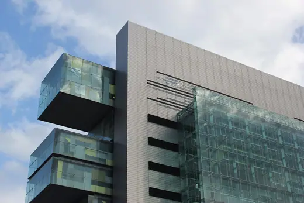
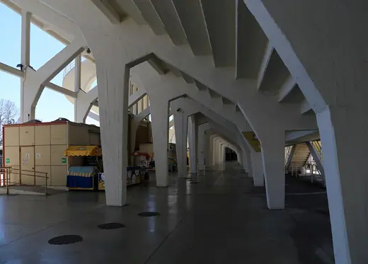
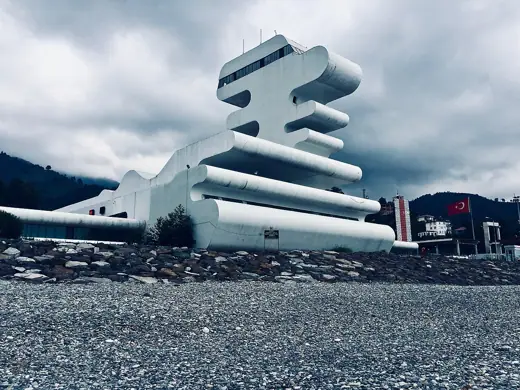
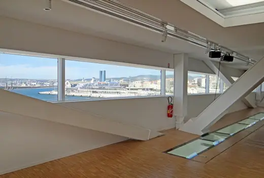
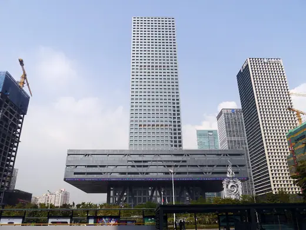
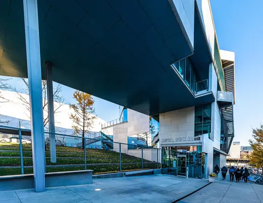

Buildings 180
Sort
 Rietveld Schröder House1924 · Utrecht
Rietveld Schröder House1924 · Utrecht CCTV Headquarters2012 · Beijing
CCTV Headquarters2012 · Beijing Marina Bay Sands2010 · Singapore
Marina Bay Sands2010 · Singapore Torre Velasca1958 · Milan
Torre Velasca1958 · Milan Institute of Contemporary Art, Boston2006 · Boston
Institute of Contemporary Art, Boston2006 · Boston Gas Natural Building2005 · Barcelona
Gas Natural Building2005 · Barcelona London Eye2000 · London
London Eye2000 · London Whitney Museum of American Art2015 · New York
Whitney Museum of American Art2015 · New York
Manchester Civil Justice Centre2007 · Manchester Copenhagen Opera House2004 · Copenhagen
Copenhagen Opera House2004 · Copenhagen WoZoCo1997 · Amsterdam
WoZoCo1997 · Amsterdam Milstein Hall, Cornell University2011 · Ithaca
Milstein Hall, Cornell University2011 · Ithaca Biblioteca Luis Ángel Arango1958 · Bogotá
Biblioteca Luis Ángel Arango1958 · Bogotá
Stadio Artemio Franchi1931 · Florence Fallingwater1939 · Mill Run
Fallingwater1939 · Mill Run 56 Leonard Street2017 · New York
56 Leonard Street2017 · New York One Central Park2014 · Sydney
One Central Park2014 · Sydney Library and Learning Center, Vienna University of Economics2013 · Vienna
Library and Learning Center, Vienna University of Economics2013 · Vienna Shizuoka Press and Broadcasting Center1967 · Tokyo
Shizuoka Press and Broadcasting Center1967 · Tokyo Pierre Lassonde Pavilion2016 · Quebec City
Pierre Lassonde Pavilion2016 · Quebec City
Sarpi Border Checkpoint2011 · Sarpi National Library of Argentina1992 · Buenos Aires
National Library of Argentina1992 · Buenos Aires King Power Mahanakhon2016 · Bangkok
King Power Mahanakhon2016 · Bangkok Tainan Main Public Library2021 · Tainan
Tainan Main Public Library2021 · Tainan Robie House1910 · Chicago
Robie House1910 · Chicago Vitra Fire Station1993 · Weil am Rhein
Vitra Fire Station1993 · Weil am Rhein Geisel Library1970 · San Diego
Geisel Library1970 · San Diego Palau de les Arts Reina Sofia2005 · Valencia
Palau de les Arts Reina Sofia2005 · Valencia Aqua Tower2009 · Chicago
Aqua Tower2009 · Chicago Graduate House, University of Toronto2000 · Toronto
Graduate House, University of Toronto2000 · Toronto Port House2016 · Antwerp
Port House2016 · Antwerp Rusakov Workers' Club1928 · Moscow
Rusakov Workers' Club1928 · Moscow Rose Seidler House1950 · Wahroonga
Rose Seidler House1950 · Wahroonga Rainier Tower1977 · Seattle
Rainier Tower1977 · Seattle Hong Kong Design Institute2010 · Hong Kong
Hong Kong Design Institute2010 · Hong Kong
Villa Méditerranée2013 · Marseille Price Tower1956 · Bartlesville
Price Tower1956 · Bartlesville Guthrie Theater2006 · Minneapolis
Guthrie Theater2006 · Minneapolis Niterói Contemporary Art Museum1996 · Niterói
Niterói Contemporary Art Museum1996 · Niterói Dokk12015 · Aarhus
Dokk12015 · Aarhus Bella Sky Hotel2011 · Copenhagen
Bella Sky Hotel2011 · Copenhagen Auditorio de Tenerife2003 · Santa Cruz de Tenerife
Auditorio de Tenerife2003 · Santa Cruz de Tenerife Vancouver House2020 · Vancouver
Vancouver House2020 · Vancouver Oscar Niemeyer Museum2002 · Curitiba
Oscar Niemeyer Museum2002 · Curitiba Hanoi Museum2010 · Hanoi
Hanoi Museum2010 · Hanoi Kilden Performing Arts Centre2012 · Kristiansand
Kilden Performing Arts Centre2012 · Kristiansand
Shenzhen Stock Exchange2013 · Shenzhen
Campbell Sports Center2012 · New York